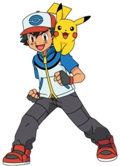

Ash Ketchum

Ash Ketchum nasceu na cidade de Pallet, na região de Kanto, e é um garoto que luta para se tornar o maior mestre pokemon do mundo, partindo em jornada com esse objetivo em mente. Para catalogar os monstros, ele possui a PokéDex, um computador de bolso que contém todas as informações sobre os Pokémon da região onde foi programado, sendo atualizado a cada nova jornada. Uma das metas de Ash é também ser campeão de uma Liga Pokemon Regional de grande porte. Para tanto, desafia os ginásios pokemon de cada região que visita, para reunir o mínimo de oito insígnias necessárias para participar de uma competição da Liga. Tem uma personalidade irritável, impulsiva e ingênua, mas, ao mesmo tempo, também é energético, alegre e bondoso. Enquanto viaja pelas diversas cidades de uma região para cumprir seu objetivo, Ash tem a oportunidade de capturar novos Pokémon, treiná-los para ajudá-lo nas lutas de ginásio e ajudar a preencher a PokéDex com todos os Pokémon os quais já viu. Além disso, ele eventualmente enfrenta rivais e combate a Equipe Rocket, uma equipe especializada em roubar Pokémon poderosos ou raros. Quando está viajando, Ash pode carregar até 6 Pokémon consigo de cada vez, mas pode armazenar mais nos laboratórios do Professor Carvalho e da Professora Juniper, trocando-os pelos que carrega, de acordo com a necessidade. Balanceando sua equipe, Ash busca derrotar todo tipo de inimigo.